data(mtcars)Practical 1 – Exploring continuous variables
Introduction
This practical will lead you into producing some high quality standard visualisations of single continuous data variables, as seen in lectures.
By the end of the lab, you will have acquired the following skills:
-
Plotting a histogram with
hist -
Plotting a boxplot with
boxplot -
Extracting simple numerical summaries with
summaryandfivenum - Customising plots with labels, titles, colour, etc.
- Producing multiple variations of the plots above
Exercise 1 (Standard Plots in R)
To begin with, let’s first see how to use R to produce standard plots of a variable, namely histograms, boxplots, and quantile (or QQ) plots.
For illustration, let us use the R built-in mtcars data set, which contains information on the characteristics of 23 cars.
Histograms
A histogram consists of parallel vertical bars that graphically shows the frequency distribution of a quantitative variable. The area of each bar is proportional to the frequency of items found in each class. A histogram is useful to look at when we want to see more detail on the full distribution of the data, and features relating to its shape.
To plot a histogram, we apply the hist function to the data vector. We can extract the mpg (miles-per-gallon) variable from the mtcars data set using the $ operator, and so we can draw a histogram as follows:
hist(mtcars$mpg)
This seems to suggest that we have a peak somewhere between 15 and 20 mpg, and potentially another peak between 30 and 35 mpg - perhaps suggesting groups of ‘fuel efficient’ and ‘fuel inefficient’ cars.
One way to assess if the number of bars in the histogram is appropriate is to show the location of the data points on the horizontal axis. We can add a ‘rug plot’ to our histogram, which marks the positions of the data with lines on the axis:
hist(mtcars$mpg)
rug(mtcars$mpg) ## Note: the 'rug' function draws on top of an existing histogram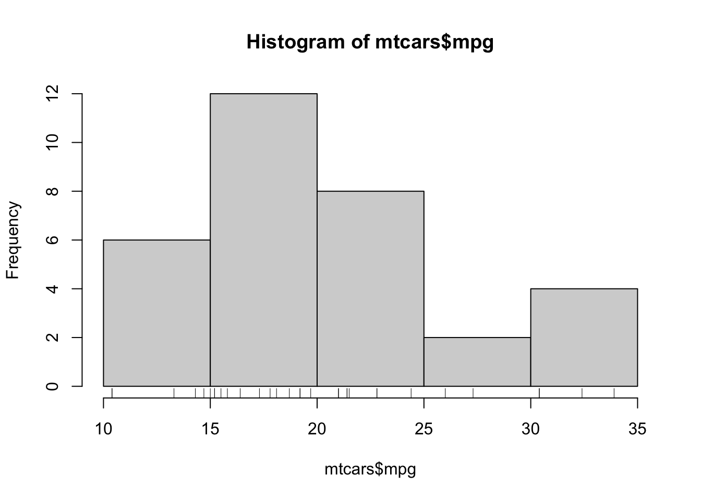
Now we can also see where the data fall within the bars!
The default settings of hist will determine the number of bars to display algorithmically, and in this case it has drawn only 5. In general, this is probably too few to show any detail, but we don’t have many data points here. Fortunately, the display of the histogram can be adjusted by a number of arguments:
breaks- allows us to control the number of bars in the histogram.breakscan take a variety of different inputs:- If
breaksis set to a single number, this will be used to (suggest) the number of bars in the histogram. - If
breaksis set to a vector, the values will be used to indicate the endpoints of the bars of the histogram.
- If
freq- ifTRUEthe histogram shows the simple frequencies or counts within each bar; ifFALSEthen the histogram shows probability densities rather than counts.
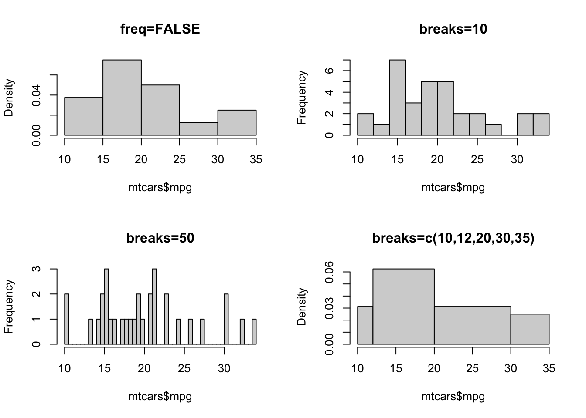
Task 1a
- Use the
histfunction to draw histograms of miles-per-gallon which match those shown above (don’t worry about the labels).
Click for solution
hist(mtcars$mpg,freq=FALSE,main='freq=FALSE')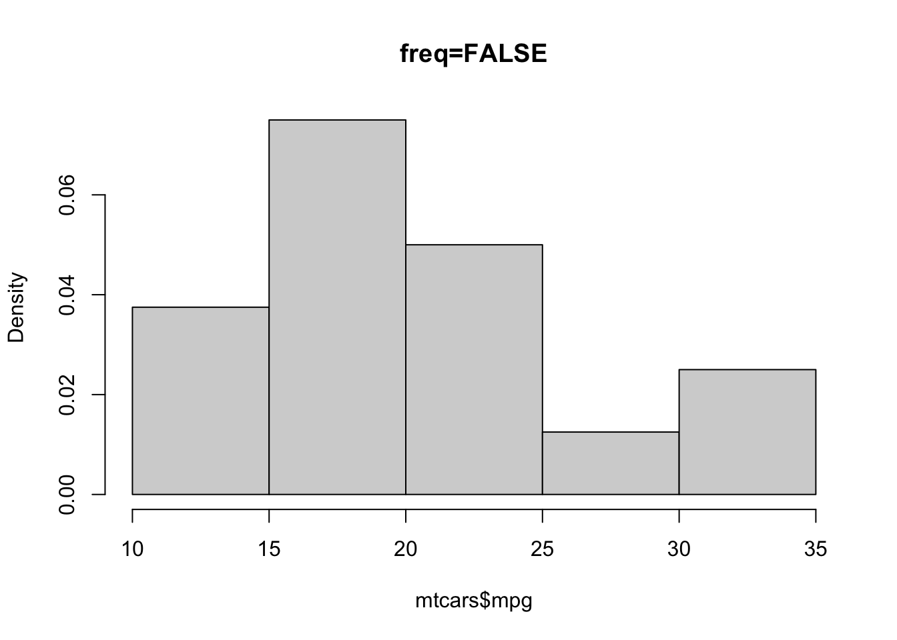
hist(mtcars$mpg,breaks=10,main='breaks=10')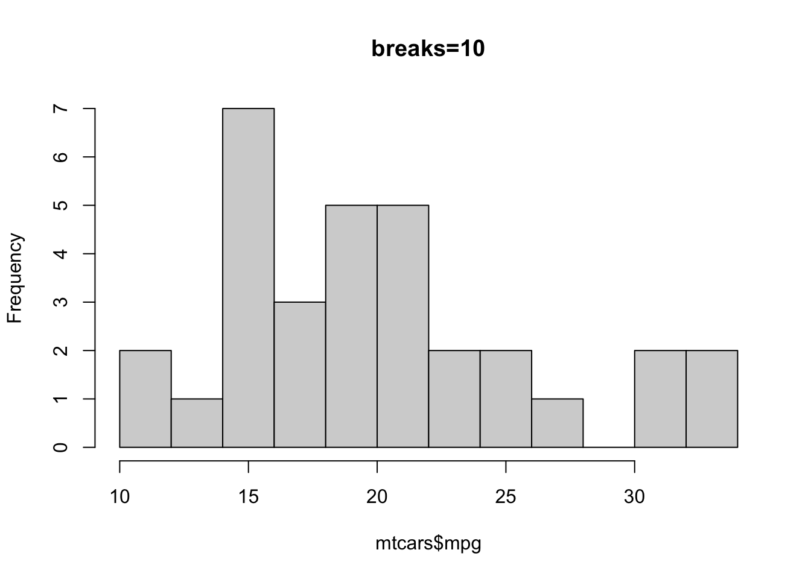
hist(mtcars$mpg,breaks=50,main='breaks=50')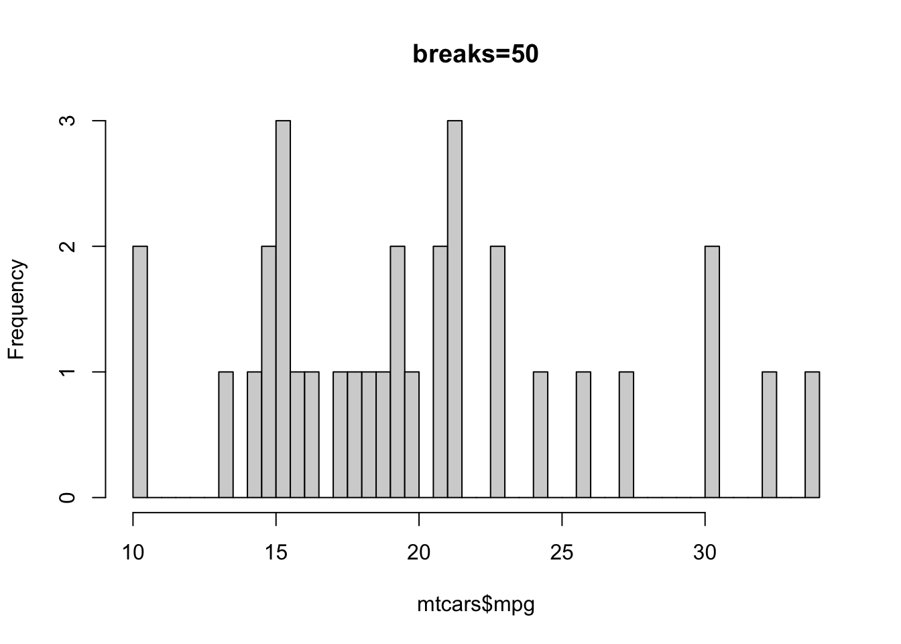
hist(mtcars$mpg,breaks=c(10,12,20,30,35), main="breaks=c(10,12,20,30,35)")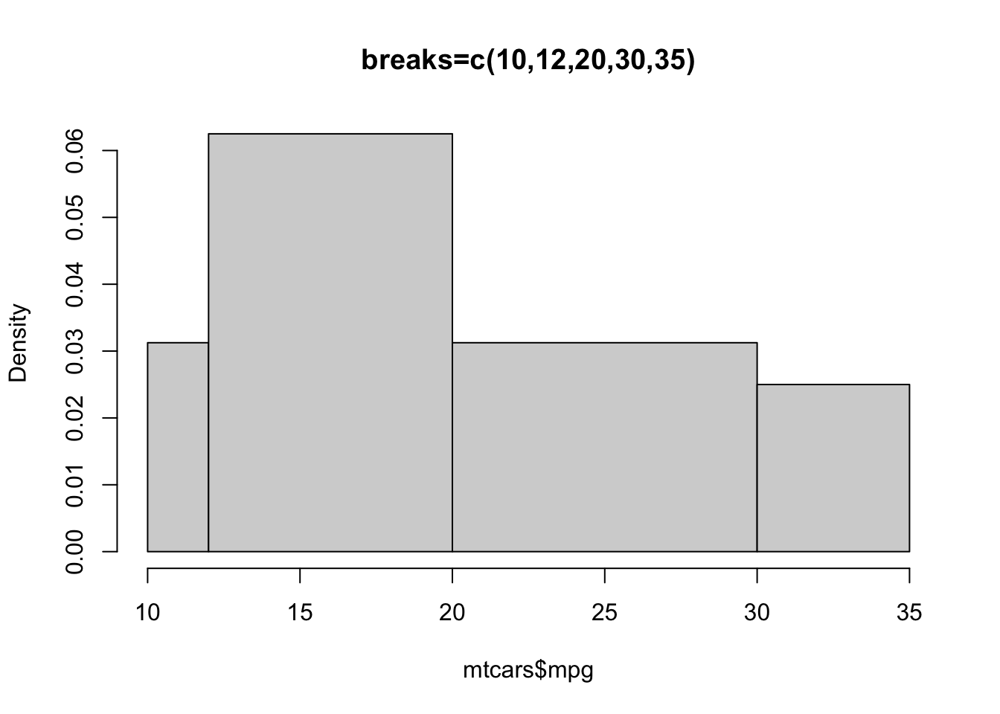
Numerical summaries
A five-number numerical summary can be computed with the fivenum function, which takes a vector of numbers as input. To add a little more information, the summary function includes the mean of the data for a 6-number summary.
Task 1b
Compute summaries of the mpg data in the mtcars dataset using fivenum and summary. What is your interpretation of the result?
Click for solution
fivenum(mtcars$mpg)[1] 10.40 15.35 19.20 22.80 33.90The values returned are the sample minimum, lower quartile, median, upper quartile and maximum. We can see that the median across all the cars in the dataset is about 20 miles per gallon. This is pretty terrible by modern standards, but the data are from 1974 and the USA.
summary(mtcars$mpg) Min. 1st Qu. Median Mean 3rd Qu. Max.
10.40 15.43 19.20 20.09 22.80 33.90 Boxplots
A boxplot provides a graphical view of the median, quartiles, maximum, and minimum of a data set. In many ways, it is simply a direct visualisation of the five number summary constructed above. The whiskers (vertical lines) capture roughly 99% of a normal distribution, and observations outside this range are plotted as points representing outliers (see the figure below).

Boxplots are created for single variables using the boxplot function, but can be used to easily compare many variables or groups within the data. To draw a boxplot of a single variable, multiple variables, or all variables in a data frame, we simply pass the data directly to the boxplot function:
boxplot(mtcars$mpg)
As the boxplot is based on the simple 5-number summary, it lacks the detail of a histogram. However, we can inspect it for features such as symmetry or skewness - a symmetric distribution will give a boxplot with a whiskers of equal length, a centrally-positioned box evenly divided by the median line.
Here, we see the box is slightly off-centre, suggesting some slight skewness. We also note that there are no obvious outliers.
Task 1c
Draw a a boxplot of all the variables in mtcars by passing the entire data frame to the boxplot function. Can you see anything useful in the plot?
Click for solution
boxplot(mtcars)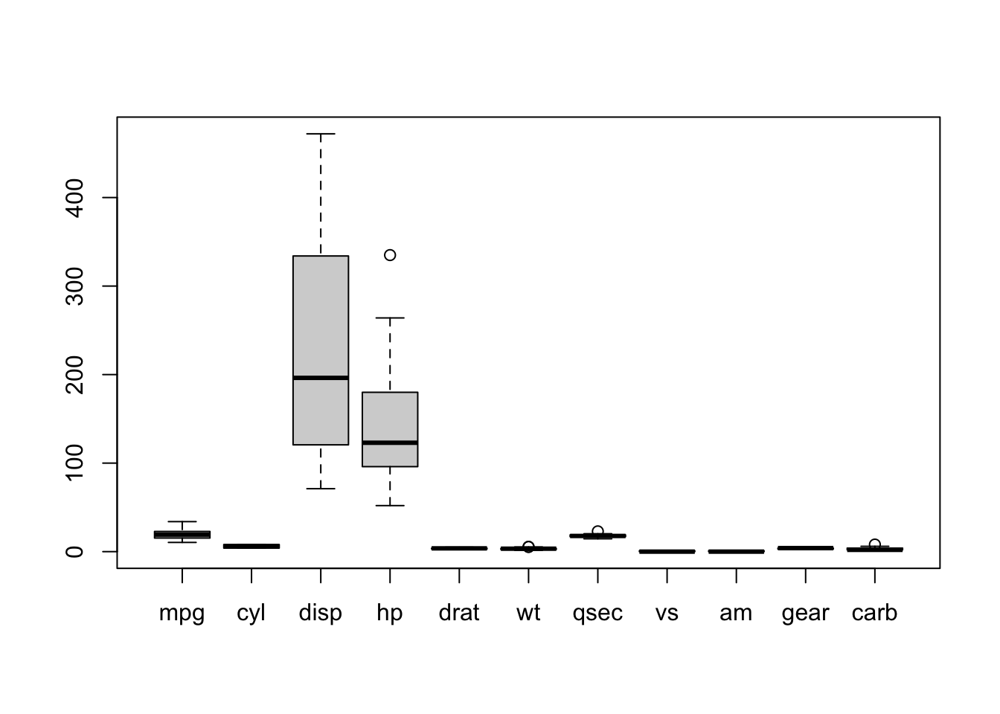
The boxplot is most useful when comparing how a variable behaves in different groups (i.e., the levels of a categorical variable). For example, we can compare the MPG with the number of engine cylinders
cyl <- factor(mtcars$cyl) # make the 'cyl' variable categorical
boxplot(mtcars$mpg ~ cyl)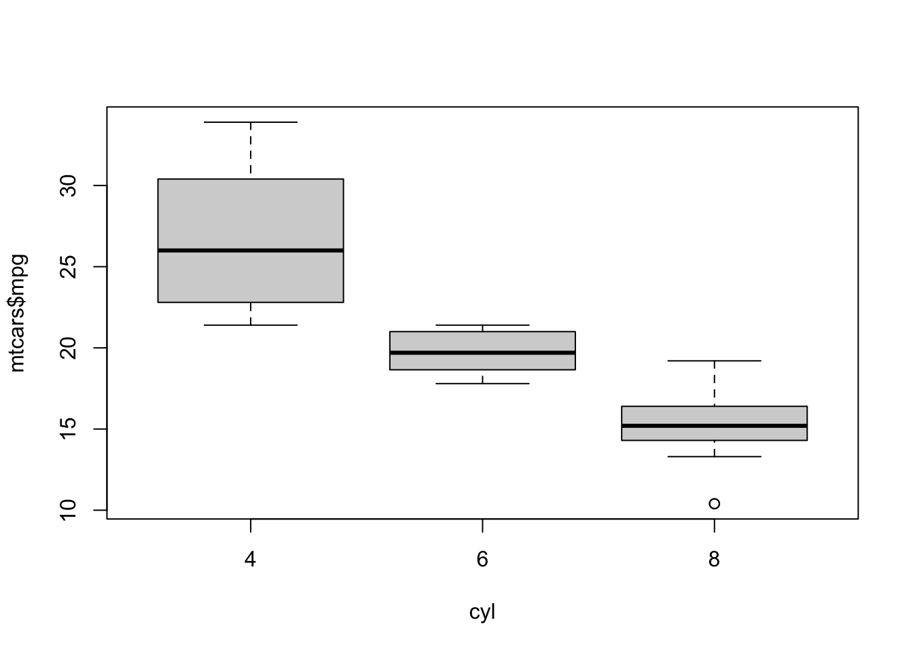
What do you conclude about fuel efficiency in cars with more engine cylinders?
Optional arguments for boxplot include:
horizontal- ifTRUEthe boxplots are drawn horizontally rather than vertically.varwidth- ifTRUEthe boxplot widths are drawn proportional to the square root of the samples sizes, so wider boxplots represent more data.
Exercise 2: Data analysis of Galton’s Heights
Francis Galton famously developed his ideas on correlation and regression using data which included the heights of parents and their children. This galton data set include data on heights for 928 children and their 205 ‘midparents’. Each ‘midparent’ height is the average of the father’s height and 1.08 times the mother’s height (to adjust for the usual gender differences). Similarly, the daughter’s heights have also been multiplied by 1.08. Note that we have one midparent height for each child, so that many midparent heights are repeated.
The variables are child and parent for the different heights recorded in inches.
Task 2a
- Download the galton.Rda data set from the Ultra page and load the file
- Draw a boxplot of both variables in the data set.
- What features do you see? How do the heights compare in terms of location and spread?
- Does this agree with what you expected?
- Draw and compare histograms of the two variables - can you detect any noticeable similarities or differences?
- Redraw your histograms and add a rugplot to each. Does this give you more information?
Click for solution
boxplot(galton)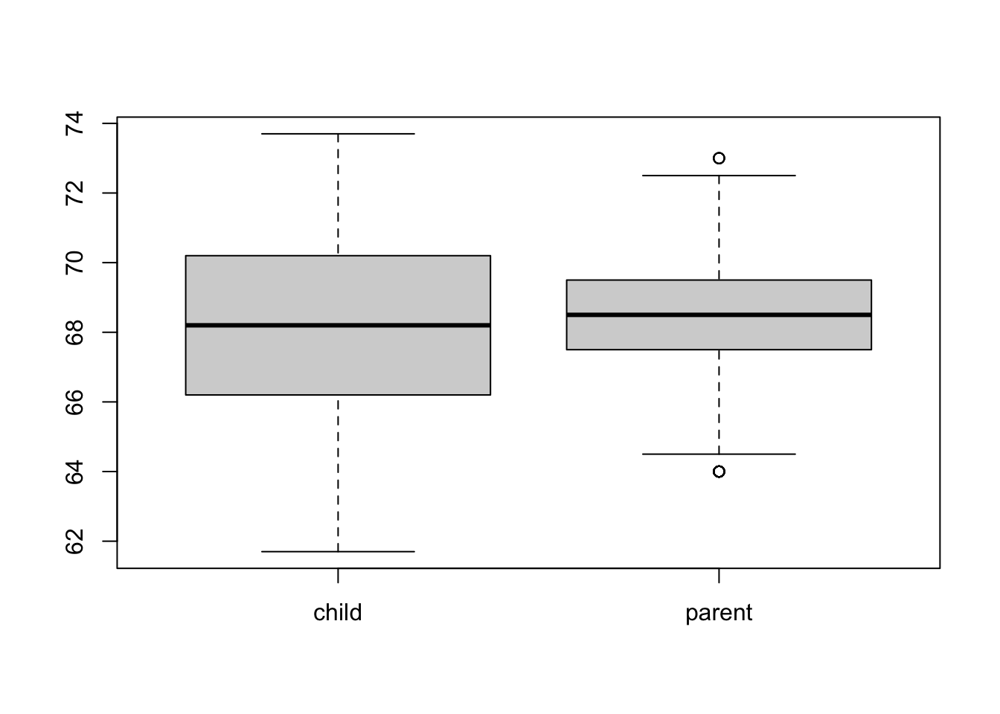
## parents are less spread than children, both seem to be centred around the
## same values (about 68.5)
## both appear symmetric
## parent displays two outliers
## expectations: similar heights? so yes.
## not sure would we expect more variability in children than parents, though parents are an average!
hist(galton$child)
rug(galton$child)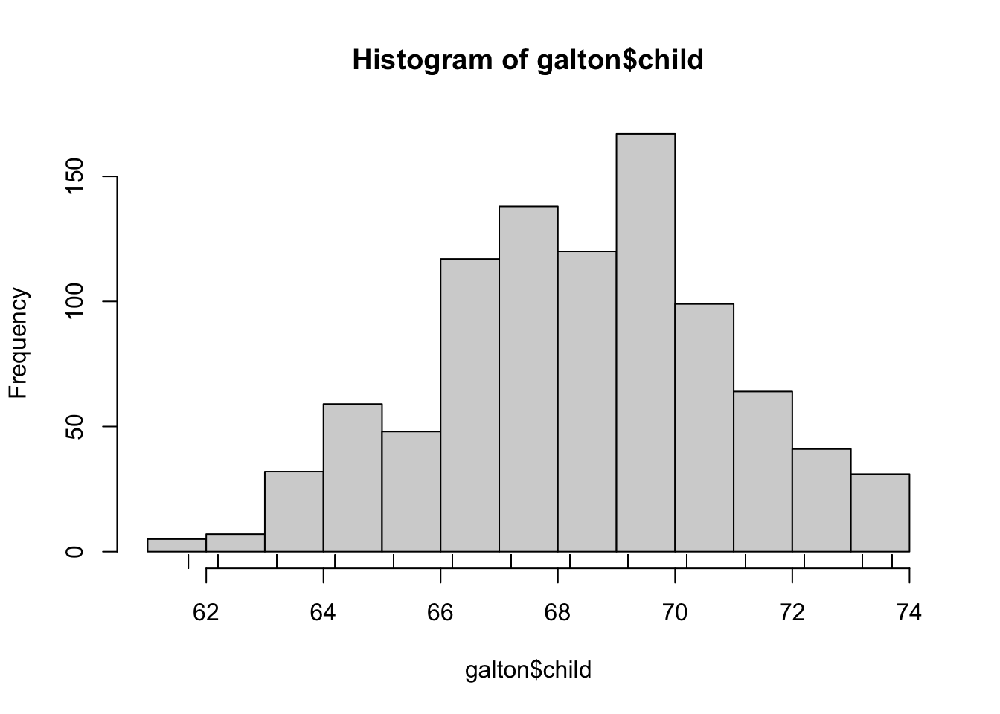
hist(galton$parent)
rug(galton$parent)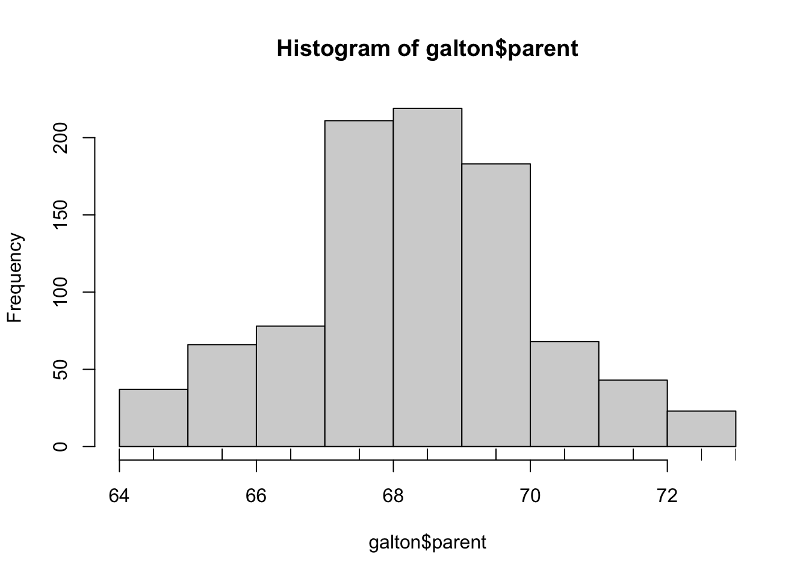
## histograms are clearly symmetric, normal distributions?
## rugplot shows something strange - all of these data points are lining up on a few values - why?
## lets look at the first 30 values
galton$child[1:30] [1] 61.7 61.7 61.7 61.7 61.7 62.2 62.2 62.2 62.2 62.2 62.2 62.2 63.2 63.2 63.2
[16] 63.2 63.2 63.2 63.2 63.2 63.2 63.2 63.2 63.2 63.2 63.2 63.2 63.2 63.2 63.2## is there rounding here? all the values are at integers +0.2...
## how many unique values are there?
unique(galton$parent) [1] 70.5 68.5 65.5 64.5 64.0 67.5 66.5 69.5 71.5 72.5 73.0## only 11 unique values!Task 2b
- Using the par() command, draw histograms of parents and child heights side-by-side on the same plot (you may need to adjust the width of your plot window.)
- Do your plots reveal anything interesting?
Click for solution
par(mfrow=c(1,2))
hist(galton$parent)
hist(galton$child)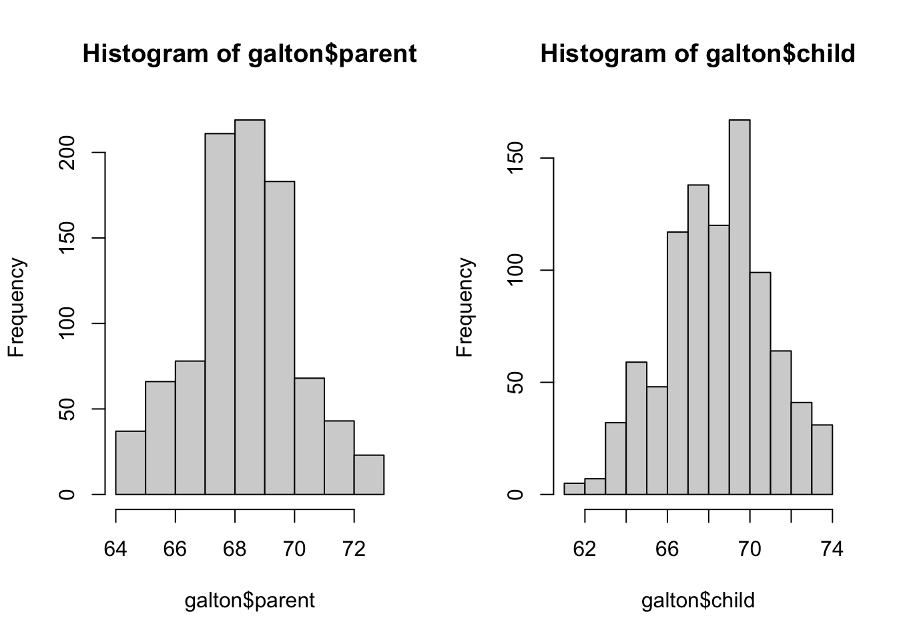
Customising Plots
One of the difficulties of comparing multiple independent plots is we need to do more work to ensure consistency of presentation. In particular, we should ensure that our histogram intervals and axis ranges are the same for both plots, as the default presentation will change from plot to plot.
Many high level plotting functions (plot, hist, boxplot, etc.) allow you to include additional options to customise how the plot is drawn (as well as other graphical parameters). We have seen examples of these already with the axis label arguments xlab and ylab, however we can customise the following plot features for finer control of how a plot is drawn.
Axis limits
To control the ranges of the horizontal and vertical axes, we can add the xlim and ylim arguments to our original plotting function To set the horixontal axis limits, we pass a vector of two numbers to represent the lower and upper limits, xlim = c(lower, upper) specifying numerical values for upper and lower, and repeat the same for ylim to customise the vertical axis.
Axis labels
To specify a label for the x- and y-axes we can supply a string to the xlab and ylab arguments. To give a plot a title, we pass the title as a string to the main argument.
It is easier to compare the shape of distributions in histograms when they are arranged vertically, they use equal horizontal axis limits, and the same binwidths.
Task 2c
- Use
parto setup a column of two plots. - Plot a histogram of
childand thenparentfromgaltonusing:- x-axis limits of 60 to 75
- A bar width of 1 unit
- An appropriate x-axis label and plot title
- Does the comparison yield any new information that wasn’t conveyed in the boxplot?
- Try reducing your bar widths - what do you find?
Click for solution
par(mfrow=c(2,1))
hist(galton$parent,xlim=c(60,75),breaks=60:75,xlab='Parent heights', main='')
hist(galton$child,xlim=c(60,75),breaks=60:75,xlab='Child heights', main='')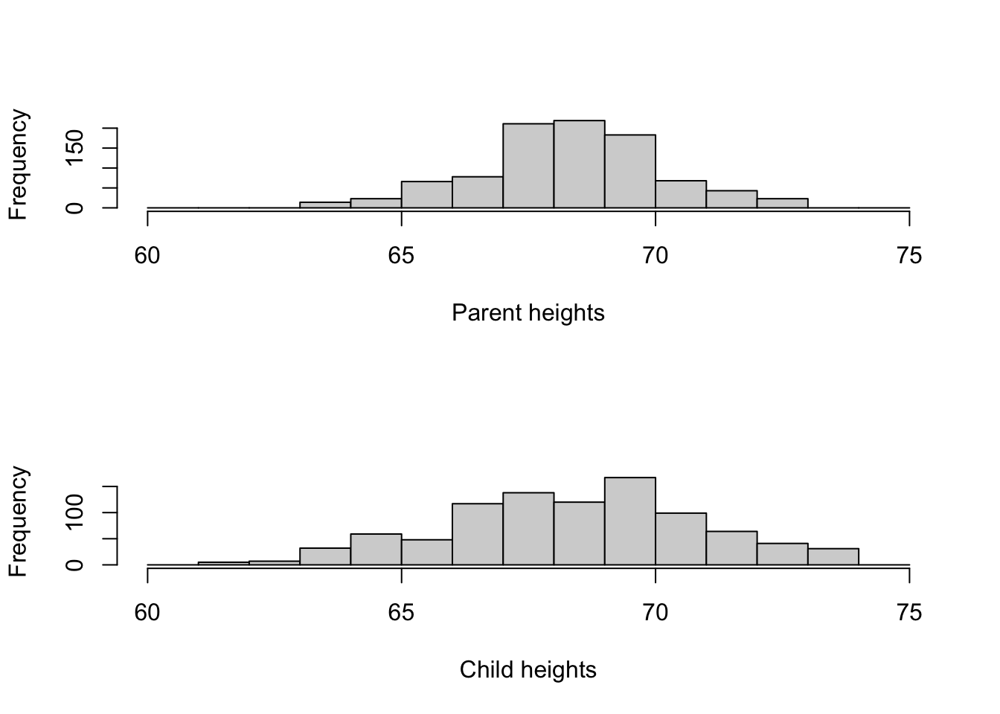
## they seem to line up nicely, with the children more spread. Much like the boxplots
## why are the parents less variable? One set of parents has many children, so
## there's a lot more variability from many children (between 1 and 15) there
## due to repetition of the parent values
## its actually a difference of the order of 1/sqrt(2), which you would expect for
## the mean of 2 parents!In interpreting the data, it is worth noting that:
- Galton obtained this data “through the offer of prizes” for the “bext Extracts from their own Family Records”, so the sample is hardly a random one
- the data are clearly heavily rounded for tabulation
- family sizes vary from 1 child up to 15, so that there is a lot of repetition in the midparent heights.
Exercise 3: Data exploration of the movies dataset
Data science inevitably involves working with large data sets. The effort involved in preparing and making a large dataset usable for analysis should not be underestimated, but thankfully we’re going to look at a dataset “prepared earlier”. This movies data set (downloadable from Ultra) is reasonably large(ish), containing 24 different attribues of 28819 movies gathered from IMDB. One of the variables is the movie length in minutes, and it is interesting to look at this variable in some detail.
Task 3a
- Load the
moviesdata set and draw a histogram of the data. - Plot a histogram of the
lengthvariable. - What features can you see?
- Add a rugplot to the histogram - what problems does this highlight?
- Let’s try a boxplot of the data - do we learn anything more?
- Are there any obvious outliers?
Click for solution
hist(movies$length)
rug(movies$length)
## all the data stack up at the left end near zero, but the range of the data is huge!
boxplot(movies$length,horizontal = TRUE)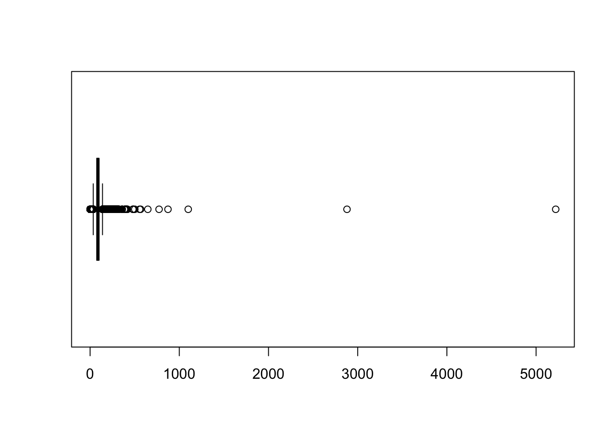
## this confirms the same as the rugplot, but there are two ridiculously large outliersTask 3b
Look at the outliers more closely:
- What are the lengths of the two longest movies?
- Does that seem sensible?
- Extract the subset of the dataframe containing all the variables for both of these movies
- Inspect the variable values:
- The variables
r1tor10give the percentage of reviews which rated the movie as a1up to a10out of10. Are these movies particularly popular? - What are the names of the movies? Do a quick Google search to see if you can find out more.
Click for solution
There are various way you can do this, I chose to sort the data and use the head or tail functions to extract the end/start of the list
tail(sort(movies$length))[1] 647 773 873 1100 2880 5220head(sort(movies$length,decreasing=TRUE))[1] 5220 2880 1100 873 773 647so 5220 and 2880 minutes - that’s 87 and 48 hours, or 14.5 and 8 days respectively. These are obviously not ‘genuine’ movies. Although it’s tempting to dismiss these as simple errors, it is worth checking if possible.
To look at all the variables for these two movies, we must subset the data frame using the square brackets
movies[movies$length>2000,] title year length budget
11937 Cure for Insomnia, The 1987 5220 NA
30574 Longest Most Meaningless Movie in the World, The 1970 2880 NA
rating votes r1 r2 r3 r4 r5 r6 r7 r8 r9 r10 mpaa Action Animation
11937 3.8 59 44.5 4.5 4.5 4.5 0 0 0 4.5 4.5 44.5 0 0
30574 6.4 15 44.5 0.0 0.0 0.0 0 0 0 0.0 0.0 64.5 0 0
Comedy Drama Documentary Romance Short
11937 0 0 0 0 0
30574 0 0 0 0 0In this case, the extreme outliers should be ignored, and for exploring the main distribution of movie lengths it makes sense to set some kind of upper limit. Over 99% of the data are less than three hours in length, so let’s restrict ourselve to those.
Task 3c
- Extract the all the movies of length at most three hours.
- Draw a histogram - what do you find?
Click for solution
movies2 <- movies[movies$length<180,]
hist(movies2$length)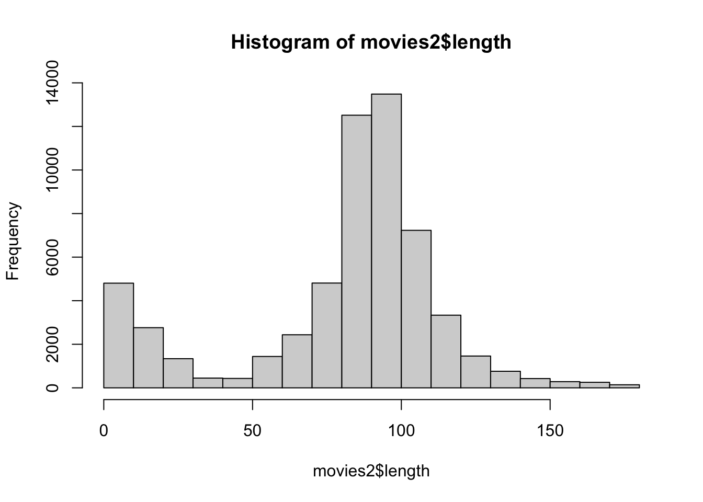
Useful context:
- The Oscars define a “short film” as anything under 40 minutes.
- Animated shorts are typically between 5 and 8 minutes long, and are counted as individual movies (so, e.g., every ‘Tom and Jerry’ cartoon has its own entry).
Task 3d
- Redraw your histogram using a bin-width of 1 minute (you may need to enlarge your plot window).
- What do you see? How does the information above help explain the data?
- Is there any heaping in the data? At what values?
Click for solution
To get a 1-minute bin width, I made a sequence of integers from 0 to 180 as my breakpoints. If you’re not familiar with this, look at the help for the ‘seq’ function in creating similar sequences.
hist(movies2$length,breaks=0:180)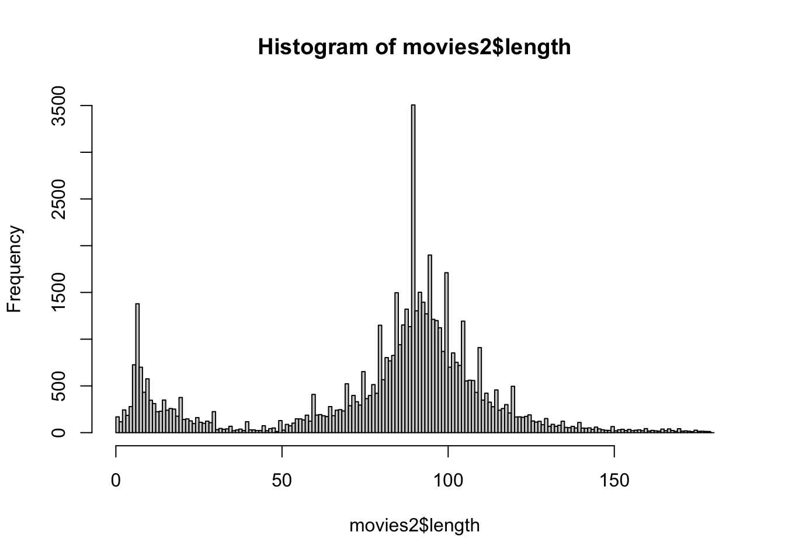
Exercise 4: Using Colour
Using colour in a plot can be very effective, for example to highlight different groups within the data. Colour is adjusted by setting the col optional arugment to the plotting function, and what R does with that information depends on the value we supply.
colis assigned a single value: all points on a scatterplot, all bars of a histogram, all boxplots are coloured with the new colourcolis a vector:- in a scatterplot, if
colis a vector of the same length as the number of data points then each data point is coloured individually - in a histogram, if
colis a vector of the same length as the number of bars then each bar is coloured individually - in a boxplot, if
colis a vector of the same length as the number of boxplots then each boxplot is coloured individually - if the vector is not of the correct length, it will be replicated until it is and the above rules apply
- in a scatterplot, if
Now that we know how the col argument works, we need to know how to specify colours. Again, there are a number of ways and you can mix and match as appropriate
- Integers: The integers
1:8are interpreted as colours (black, red, green, blue, …) and can be used as a quick shorthand for a common colour. Typepalette()to see the sequence of colours R uses. - Names: R recognises over 650 named colours is specified as text, e.g.
"steelblue","darkorange". You can see the list of recognised names by typingcolors(), and a document showing the actual colors is available here - Hexadecimal: R can recognise colours specified as hexadecimal RGB codes (as used in HTML etc), so pure red can be specified as
"#ff0000"and cyan as"#00ffff". - Colour functions: R has a number of functions that will generate a number of colours for use in plotting. These functions include
rainbow,heat.colors, andterrain.colorsand all take the number of desired colours as argument.
## Colour example
## 3 plots in one row
par(mfrow=c(1,3))
## colour the cars data by number of gears
plot(x=mtcars$wt, y=mtcars$mpg, col=mtcars$gear, xlab="Weight", ylab="MPG",
main="MPG vs Weight")
## manually colour boxplots
boxplot(mpg~cyl, data=mtcars, col=c("orange","violet","steelblue3"),
main="Car Milage Data", xlab="Number of Cylinders",
ylab="Miles Per Gallon")
## use a colour function to shade histogram bars
hist(mtcars$mpg,col=rainbow(5),main='MPG')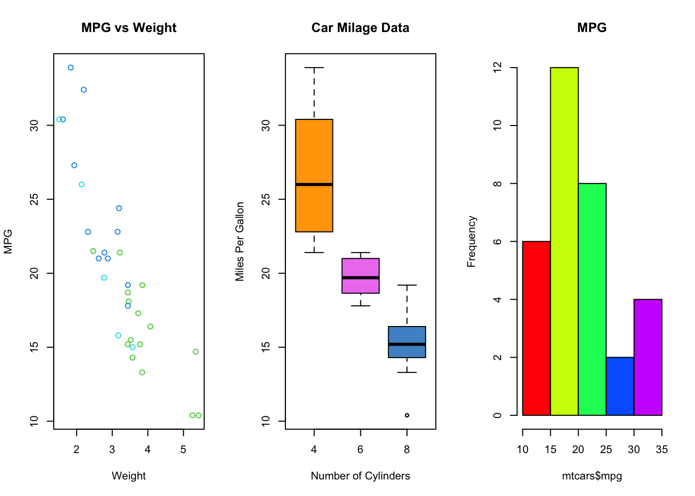
Task 4a
- Show the histograms of length of short movies next to that for ‘non-short’ movies, using a different colour for each histogram.
- Experiment with using the
colargument to add colour to your histograms.
Click for solution
par(mfrow=c(1,2))
## again, we can use subsetting to select a subset of the data. Here we don't need a ',' as we're subsetting a vector instead of a matrix
hist(movies2$length[movies2$length<=40],col='royalblue',xlab='length',main='Short films')
hist(movies2$length[movies2$length>40],col='tomato',xlab='length', main='Regular films')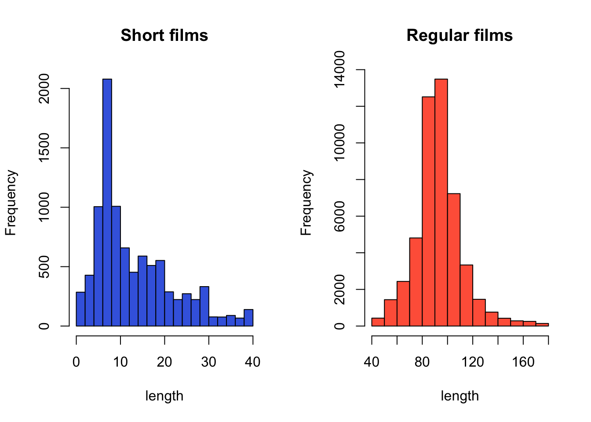
Exercise 5 (optional): German Opinion Polls
Download data: bundestag
These data contain the results of the 2009 elections for the German Bundestag, the first chamber of the German parliament. The contains the number of votes cast for the various political parties, for each state (“Bundesland”). Amongst the German political parties there are two on the left of the political spectrum, the SPD - similar to the UK’s Labour party - and Die Linke (“The Left”), a party even further to the left. Suppose we’re interested in the support for this “Die Linke” party.
Task 5a
- Explore the election support for ‘Die Linke’ party by examining the
LINKE1variable using. Compare the outputs and explain the difference you find:- A histogram, with a rugplot
- A stacked dotplot
- A beewswarm plot, setting
horizontal=TRUE
Click for solution
hist(bundestag$LINKE1)
rug(bundestag$LINKE1)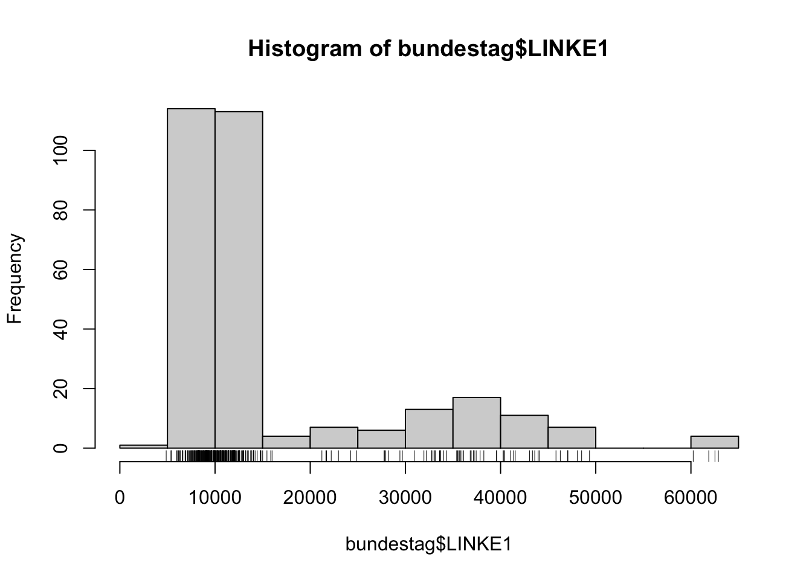
## clear concentration of points around 10k. let's try narrower bins for more detailhist(bundestag$LINKE1,breaks=seq(0,65000,by=2000))
rug(bundestag$LINKE1)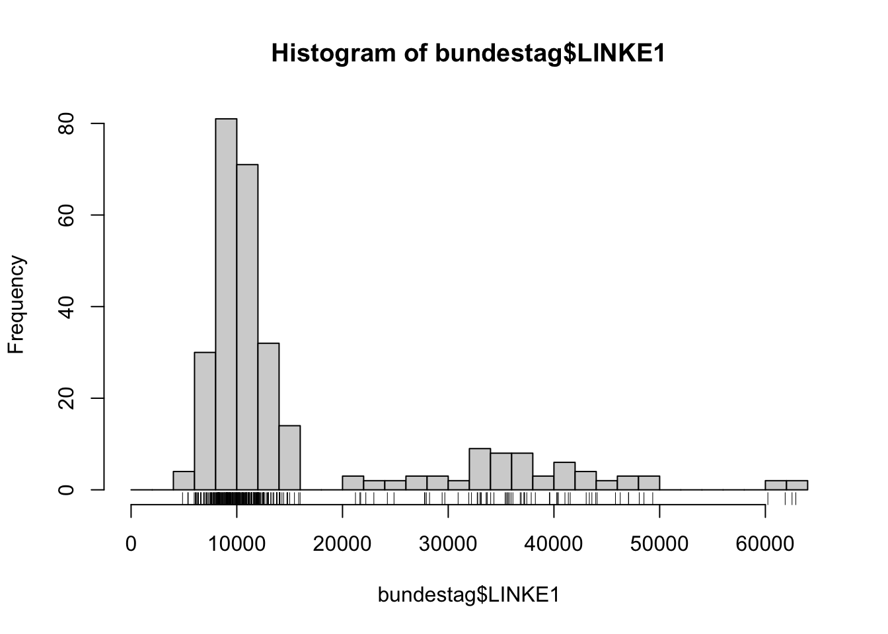
## that's a bit more usefulstripchart(bundestag$LINKE1,method='stack',pch=16)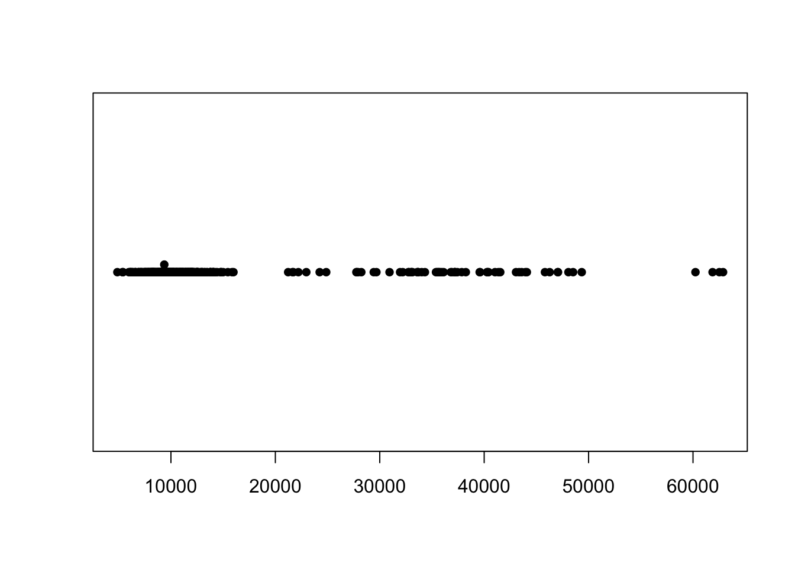
## this looks mostly like the rugplot information on the plot above, but even with stacking this doesn't resemble the histogram
## Why not? The histogram is grouping nearby points into its bars, but the dotplot/stripchart does not and is treating each unique value as a separate point.library(beeswarm)
beeswarm(bundestag$LINKE1,horiz=TRUE)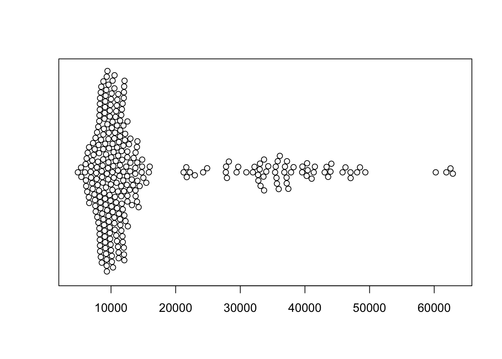
## the shape of the beewswarm more closely resembles the histogram, albeit rather than stacking points up from the bottom it works from the middle out towards the edgesA stem and leaf plot is a technique for displaying the data in a similar fashion to a histogram, while preserving the information ofthe individual numerical values. Where the histogram summarises the data by the counts in its various intervals, the stem and leaf plot retains the original data values up to two significant figures.
Task5b
- Draw a stem and leaf plot of the German election support for ‘Die Linke’ data using the
stem()function. - How does the stem and leaf plot represent these data? You may want to look at the data value to help understand.
- Now draw a histogram, adjusting the histogram to have axis range and bar width to match the stem and leaf plot.
Click for solution
stem(bundestag$LINKE1)
The decimal point is 4 digit(s) to the right of the |
0 |
0 | 55566666667777777777777888888888888888888888888888888888999999999999+14
1 | 00000000000000000000000000000000000001111111111111111111111111111111+51
1 | 5555566
2 | 122234
2 | 588889
3 | 01223333344444
3 | 556666677777788
4 | 0000011233444
4 | 6677899
5 |
5 |
6 | 0233## This is effectively a histogram with bins of width 5000 units. The number indicate the actual data values, with the "stem" being the leading digit to the left of the | symbol, and the values of the next digits of the data being indicated to the right of the |
## We can see some structure now *within* the bars, which is a bit more detail than we get from the histogram.hist(bundestag$LINKE1,breaks=seq(0,65000,by=5000))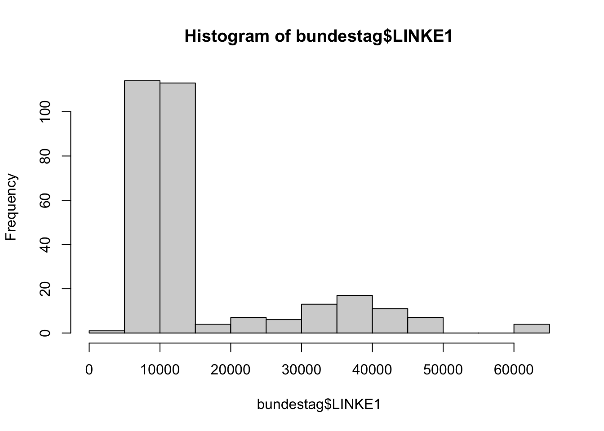
More Practice
Stripplots or Stripcharts
‘Stripplots’ or ‘Stripcharts’ are very similar to the rugplot we applied to our histograms, and display the individual data points along a single axis. They can be used in much the same way as a boxplot, but rather than showing the data summaries they display everything!
The built-in faithful data set contains measurements on the waiting times between the eruptions of the Old Faithful geyser.
data(faithful)
stripchart(faithful$waiting,ylab='Waiting Time', pch=16) 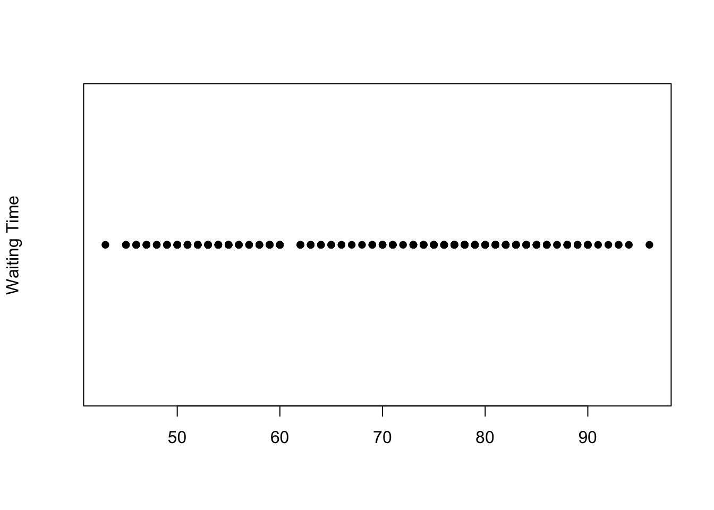
Plotting symbols
The symbols used for points in plots can be changed by specifying a value for the argument pch {#pch} (which stands for plot character). Specifying values for pch works in the same way as col, though pch only accepts integers between 1 and 20 to represent different point types. The default is usually pch=1 which is a hollow circle, in the plot above we changed it to 15 which is a filled circle.
However, when we have a lot of data points concentrated in a small interval, the stripplot suffers from problems of ‘overplotting’ where many points with similar values are drawn on top of each other.
A partial solution to this is to add random noise (known as ‘jittering’) to spread out the points.
- Make a stripplot of the movie length data - how does the overplotting problem manifest here? You may want to compare to your histogram.
A better solution is to stack the dots that fall close together, producing an alternative plot to a histogram - sometimes called a ‘dotplot’ or ‘stacked dotplot’
stripchart(faithful$waiting, method='stack',pch=16)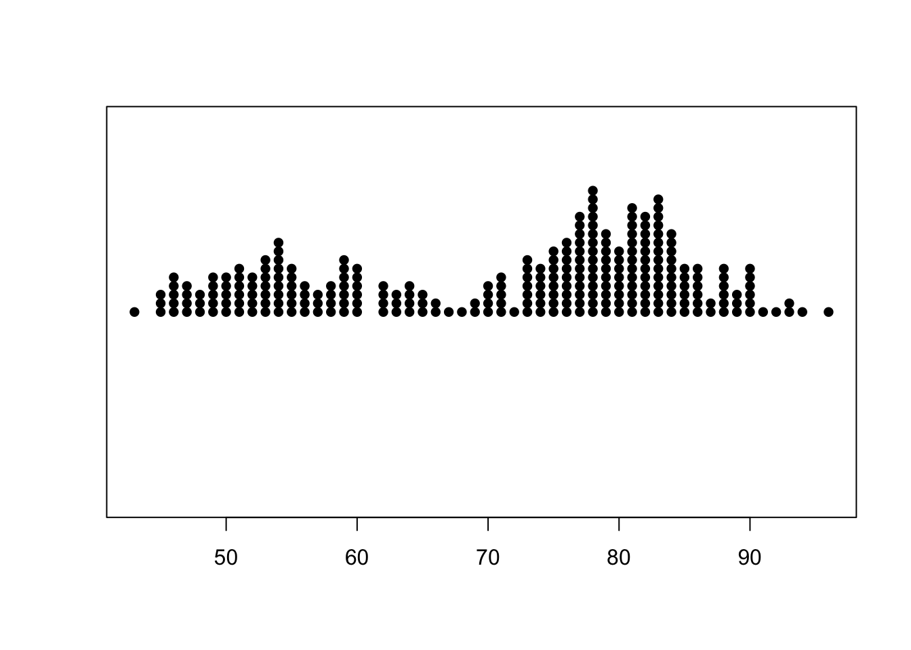
- Try this out with the movies data.
Beeswarm plots
An evolution of the stripplot is the ‘beeswarm’ plot, available from the beeswarm package. A bee swarm plot is similar to stripplot, but with various methods to separate nearby points such that each point is visible.
library(beeswarm)
beeswarm(faithful$waiting)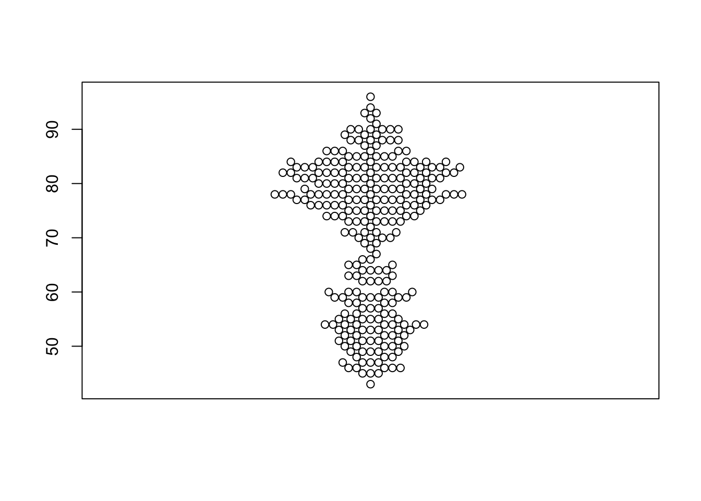
One limitation of the beeswarm plot is that the computations to arrange all the points do not scale well with large data sets. Do not try this with the movies data, or you will be waiting for a very long time!
Stem and leaf plots
To see how this works, let’s look at the Old Faithful data, sorted from smallest to largest.
sort(faithful$waiting) [1] 43 45 45 45 46 46 46 46 46 47 47 47 47 48 48 48 49 49 49 49 49 50 50 50 50
[26] 50 51 51 51 51 51 51 52 52 52 52 52 53 53 53 53 53 53 53 54 54 54 54 54 54
[51] 54 54 54 55 55 55 55 55 55 56 56 56 56 57 57 57 58 58 58 58 59 59 59 59 59
[76] 59 59 60 60 60 60 60 60 62 62 62 62 63 63 63 64 64 64 64 65 65 65 66 66 67
[101] 68 69 69 70 70 70 70 71 71 71 71 71 72 73 73 73 73 73 73 73 74 74 74 74 74
[126] 74 75 75 75 75 75 75 75 75 76 76 76 76 76 76 76 76 76 77 77 77 77 77 77 77
[151] 77 77 77 77 77 78 78 78 78 78 78 78 78 78 78 78 78 78 78 78 79 79 79 79 79
[176] 79 79 79 79 79 80 80 80 80 80 80 80 80 81 81 81 81 81 81 81 81 81 81 81 81
[201] 81 82 82 82 82 82 82 82 82 82 82 82 82 83 83 83 83 83 83 83 83 83 83 83 83
[226] 83 83 84 84 84 84 84 84 84 84 84 84 85 85 85 85 85 85 86 86 86 86 86 86 87
[251] 87 88 88 88 88 88 88 89 89 89 90 90 90 90 90 90 91 92 93 93 94 96Note that the smallest value is 43, followed by three values of 45. A stem and leaf plot of these data looks like this
stem(faithful$waiting)
The decimal point is 1 digit(s) to the right of the |
4 | 3
4 | 55566666777788899999
5 | 00000111111222223333333444444444
5 | 555555666677788889999999
6 | 00000022223334444
6 | 555667899
7 | 00001111123333333444444
7 | 555555556666666667777777777778888888888888889999999999
8 | 000000001111111111111222222222222333333333333334444444444
8 | 55555566666677888888999
9 | 00000012334
9 | 6Each row of this plot is called a ‘stem’ and the values to the right of the ‘|’ symbol are the leaves. Be sure to read where R places the decimal point for the output. For this result, the decimal is placed one digit to the right of the vertical bar. Thus, the first row of the table then consists of data values of the form \(4x\), and the only leaf is a \(3\) corresponding to the value \(43\) in the data. The next stem groups the values \(45-49\), and we notice the three observations of \(45\) are represented by the \(555\) at the start of the second stem.
Notice that each stem part is representing an interval of width 5, much like a histogram. As usual, R figures out how best to increment the stem part unless you specify otherwise. Finally, notice how the shape of the stem and leaf plot mirrors that of a histogram with interval width 5 - the only difference is that here we can see the values inside the bars.
Student survey
The data come from an old survey of 237 students taking their first statistics course. The dataset is called survey in the package MASS.
Tasks
- Load the data with
data(survey, package='MASS') - Draw a histogram of student heights - do you see evidence of bimodality?
- Experiment with different binwidths for the histogram. Which choice do you think is the best for conveying the information in the data?
- Compare male and femal heights using separate histograms with a common scale and binwidths.
Diamonds
Download data: diamonds
The set diamonds includes information on the weight in carats (carat) and price of 53,940 diamonds.
Tasks
- Is there anything unusual about the distribution of diamond weights? Which plot do you think shows it best? How might you explain the pattern you find?
- What about the distribution of prices? With a bit of detective work you ought to be able to uncover at least one unexpected feature. How you discover it, whether with a histogram, a dotplot, or whatever, is unimportant, the important thing is to find it. Having found it, what plot would you draw to present your results to someone else? Can you think of an explanation for the feature?
Zuni educational funding
Download data: zuni
The zuni dataset seems quite simple. There are three pieces of information about each of 89 school districts in the US State of New Mexico: the name of the district, the average revenue per pupil in dollars, and the number of pupils. The apparent simplicity hides an interesting story. The data were used to determine how to allocate substantial amounts of money and there were intense legal disgreements about how the law should be interpreted and how the data should be used. Gastwirth was heavily involved and has written informatively about the case from a statistical point of view Gastwirth, 2006 and Gastwirth, 2008.
One statistical issue was the rule that before determining whether district revenues were sufficiently equal, the largest and smallest 5% of the data should first be deleted.
Tasks
- Are the lowest and highest 5% of the revenue values extreme? Do you prefer a histogram or boxplot for showing this?
- Remove the lowest and highest 5% of the cases, draw a plot of the remaining data and discuss whether the resulting distribution looks symmetric.
- Draw a Normal quantile plot of the data after removal of the 5% at each end and comment on whether you would regard the remaining distribution as normal.
Pollutants from engines
Download data: engine
These data record the amounts of three pollutants - carbon monoxide CO, hydrocarbons HC, and nitrogen oxide NO - in grammes emitted per mile by 46 light-duty engines.
Tasks
- Are the distributions for the three pollutants similar? To make this an easier question to answer, try to produce histograms of the variables, using the same class intervals and range for the horizontal axis in each case.
Dosage of chlorpheniramine maleate
Download data: chlorph
These data come from a semi-automated process for measuring the actual amount of chlorpheniramine maleate in tablets which are supposed to contain a 4mg dose.
The tablets used for the study were made by two different manufacturers. For each manufacturer, a composite was produced by grinding together a number of tablets. Each composite was split into seven pieces each of the same weight as a tablet and the pieces were sent to seven different laboratories. Each laboratory made 10 separate measurements on each composite.
The data contain three variables: * chlorpheniramine - the amount measured * manufacturer - the tablet manufacturer as a factor (A or B) * laboratory - the laboratory which performed the measurement as a factor (1 to 7)
Tasks
- Produce box-plots of the chlorpheniramine measurements split by laboratory. What, if anything, do they suggest?
- Now produce box-plots by manufacturer. Anything noticeable?
- The problem here is that we really need a separate box-plot for each combination of manufacturer and laboratory. We can do this by
boxplot(chlorpheniramine~laboratory*manufacturer, data=chlorph)Try this (or some abbreviated version of it). - Try reversing the order of laboratory and manufacturer. Which way round is better? Try colouring the box-plots by manufacturer. Does that help?
- Do the data suggest that the two manufacturers actually put different amounts of the drug into supposed 4mg tablets?
- Are there obvious differences between different laboratories? If so, what kind of differences do you observe?
- If you had to choose a single laboratory to make some measurements for you, which would you choose and why?